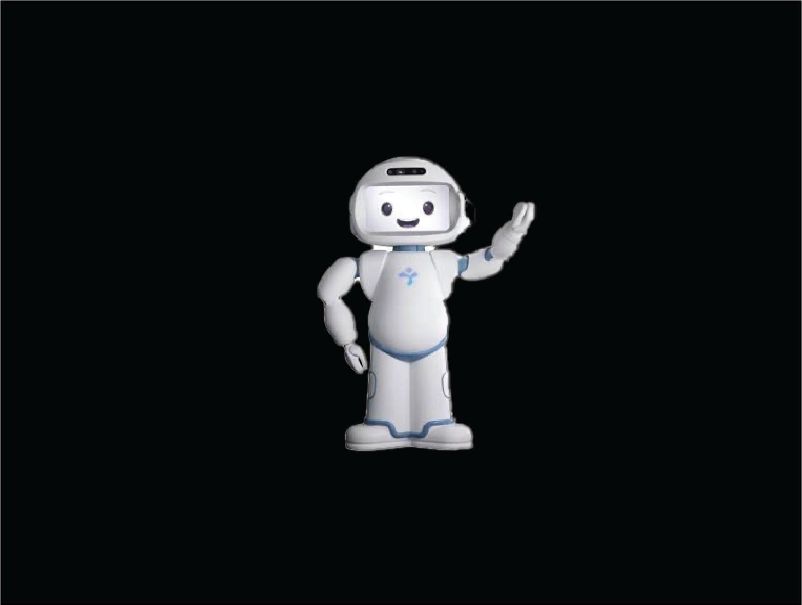

Co-design with People Living with Dementia
(Work accepted to a HRI workshop)
The Problem
Participation of PLwD in the design of robots from the early stages of the process can promote diversity, equity, and inclusion in robotics. Past studies suggested co-design methods to engage potential end-users in robot development, but they has rarely try with only PLwD.
Research methods

Research outcome
Methods to conduct co-design sessions with PLwD
Key Insights
When co-design with PLwD, it is essential to:
Collaborators
Dr. Selma Sabanovic (supervisor), Swapna Joshi, Natasha Randall, Katherine M. Tsui, and Abhijeet Agnihotri
Roles
Workshop lead, designer, and writer
Skills
UX Research, UX Design, Wizard of Oz, Survey, Interview, Co-design
Reflection
This is the first project I lead in IU and working with PLwD. It was a journey of many challenges, especially in the communication and getting the ideas out from PLwD. The experience has taught me methods and pushed me on conducting more future co-design workshops with PLwD.